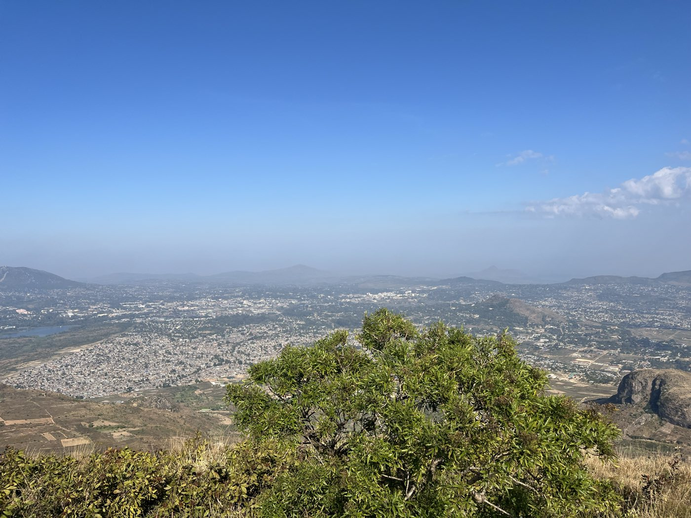

About

I work across research, policy, and program design on food systems and climate adaptation, with a particular focus on Sub-Saharan Africa. I'm currently a PhD student in City and Regional Planning at UC Berkeley, where my research examines food security, informality, and economic development — recent work looks at the political economy of fonio as it moves from a "poverty food" toward global superfood status and climatic impacts on informal food systems in Ghana.
Before returning to graduate school, I spent close to a decade in practice: most recently as Program Manager for Climate Resilience & Equity at Resilient Cities Network, and previously as a Policy Researcher at Rethink Food and a Sustainability Analyst at Schneider Electric. I hold an MSc in Environmental Sciences & Policy from Central European University and a B.A. in International Studies from the College of Staten Island.
I speak Dagbanli and English natively, along with Twi and Hausa. Feel free to reach out — see the contact page for details.